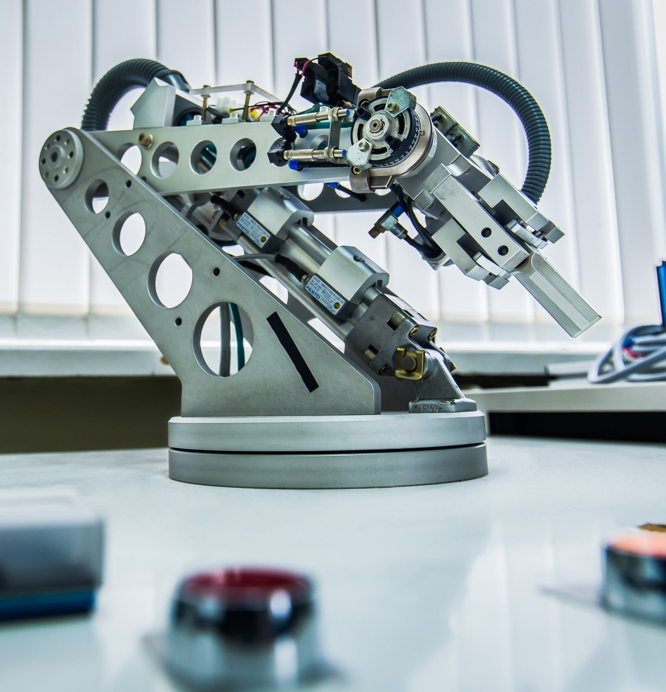
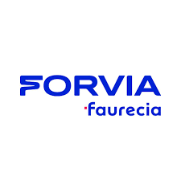

Experience
A little bit about what I have done in the last years
-

August 2019
Start Mechatronics Engineering
Start Mechatronics Engineering at the Universidad Iberoamericana Puebla.
-
Octuber 2022 - August 2024
Student Council of Mechatronics, Electronics, and Computer Systems Engineering at Ibero Puebla
I serve on the Student Council of Mechatronics, Electronics, and Computer Systems Engineering at Universidad Iberoamericana Puebla, where I organize events, address student concerns, and foster collaboration between students and faculty. I promote extracurricular engagement, support academic improvements, and develop leadership, teamwork, and communication skills to enhance the student experience and engineering education.
-

September 2023- August 2024
President of the IEEE Student Branch at Ibero Puebla
As the President of the IEEE Student Branch at Ibero Puebla, I lead a dynamic team of student engineers dedicated to advancing knowledge and innovation in electrical and electronics engineering. Our branch serves as a bridge between the academic world and industry, promoting networking, learning, and professional growth.
-

April 2024 - Octuber 2024
Industrial program trainee
During my time as a Program Trainee, I worked as an Industrial Program Engineer, focusing on the industrialization of the production line for Volvo’s Polestar model. My responsibilities included designing and optimizing processes to improve production efficiency, managing raw material purchases through SAP, coordinating with suppliers to ensure timely deliveries, and negotiating asset quotations. This role allowed me to combine technical and managerial skills, contributing to the project’s success and strengthening my competencies in the automotive industry.
-
TO
BE
CONTINUED